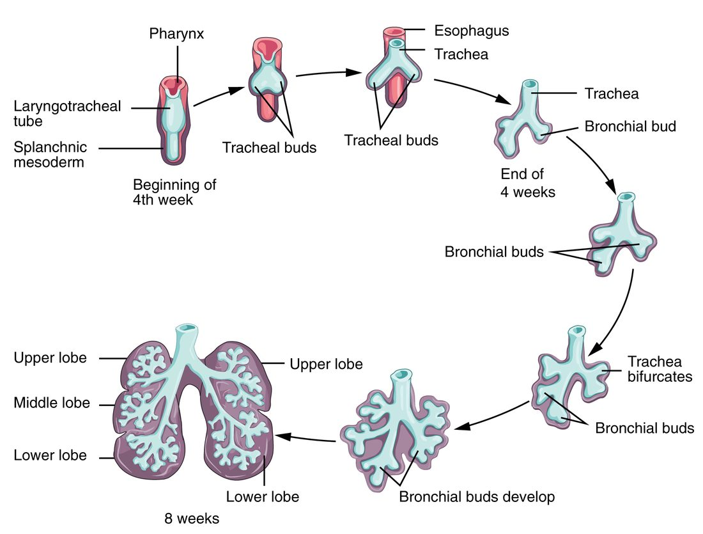

Before birth, the lungs do not exchange gases: the placenta does, and the fetal heart and vessels are plumbed to match. This page explains fetal circulation and its shunts: the three short cuts that route oxygen-rich blood from the placenta to the heart and brain and send most blood past the lungs. It also covers how the heart, blood vessels and lungs develop, how the reproductive organs become male or female, what the fetus does between week 10 and birth, the most common heart defects, and the drugs, infections and other exposures that can harm development.
Two ways of counting, again
The embryo's early events, such as the first heartbeat, are given here in days after fertilization. Everything in the fetal period is given on the clinical count, in weeks of pregnancy from the first day of the last menstrual period, which is about two weeks longer. A full-term pregnancy is about 40 weeks on that count.
The fetal period
The fetal period runs from the end of the embryonic period to birth: from about week 10 of pregnancy (week 9 after fertilization) to about week 40. At its start the fetus is about 3 to 4 cm long and weighs a few grams, but every organ system is already present. The fetal period is mostly growth and maturation: the fetus gains about a thousandfold in weight, and its organs start to work.
Clinicians divide pregnancy into three trimesters (tri- = three, mensis = month) of about three months each: the first up to the end of week 13, the second from week 14 to the end of week 27, and the third from week 28 to birth.
Landmarks of the fetal period, in weeks of pregnancy:
- Weeks 10 to 13: the kidneys begin making urine, which enters the amniotic fluid. The face looks human, and the external genitalia start to look male or female. The fetus moves, but its mother cannot yet feel it.
- Weeks 16 to 20: the mother first feels the fetus move, a moment called quickening (quick = alive). It usually comes around week 18 to 20 in a first pregnancy and a little earlier in later ones, when she knows the feeling. Fine, soft hair called lanugo (lana = wool) grows over the body. Sebaceous glands and shed skin cells form a greasy white coating, the vernix caseosa (vernix = varnish, caseosa = cheese-like), which protects the skin from the amniotic fluid.
- Weeks 22 to 24: the lungs reach the stage where gas exchange first becomes possible, and a baby born now can sometimes survive with intensive care. This is the edge of viability.
- Weeks 26 to 28: the eyes open. The fetus weighs about 1 kg.
- Weeks 28 to 40: fat, including brown fat, builds up under the skin and fills out the wrinkled skin. The lungs make surfactant, usually enough by about weeks 34 to 36. Most maternal IgG crosses the placenta. In males, the testes descend through the inguinal canals into the scrotum. Most lanugo is shed.
- Term (week 37 to just under week 42): a typical baby is about 50 cm long and weighs about 3.4 kg.
| Embryonic period | Fetal period | |
|---|---|---|
| When (after fertilization) | Weeks 1 to 8 | Week 9 to birth |
| When (clinical count) | To about week 10 | About week 10 to week 40 |
| Main process | Forming the organs from the germ layers | Growth and maturation of organs already formed |
| Size at the end | About 3 cm, a few grams | About 50 cm, about 3.4 kg |
| Effect of a harmful exposure | Major structural defects most likely | Poor growth, loss of function, smaller defects; the brain stays vulnerable |
| Name | Embryo | Fetus |
How the heart forms
The heart is the first organ to work. It begins as two tubes, which fuse into one, fold, and are then divided by walls into four chambers. Figure 1 follows each step.
From mesoderm to a beating tube
- The cardiogenic area. Around day 18 after fertilization, a horseshoe-shaped region of mesoderm at the head end of the embryonic disc is committed to forming the heart. This is the cardiogenic area (cardi- = heart, -genic = producing).
- Cords, then tubes. Cells there gather into two strands, the cardiogenic cords. Each hollows out into a thin-walled tube, an endocardial tube, one on each side.
- Fusion. As the embryo folds side to side in week 4, the two endocardial tubes are brought together under the front of the body and fuse into one primitive heart tube, around day 21 to 22. Its inner lining becomes the endocardium, and mesoderm around it forms the myocardium and the epicardium.
- The first beats. By about day 22, muscle cells in the tube contract rhythmically, and blood begins to circulate.
The five regions of the tube
The heart tube swells into five regions. Blood enters at the tail end and leaves at the head end, so the list below runs in reverse order of flow, from outflow to inflow:
| Position in the tube | What it becomes | |
|---|---|---|
| Truncus arteriosus (truncus = trunk) | Outflow end, at the head | The ascending aorta and the pulmonary trunk |
| Bulbus cordis (bulbus = bulb, cordis = of the heart) | Next in | Most of the right ventricle, and the smooth outflow parts of both ventricles |
| Primitive ventricle | Middle | Most of the left ventricle |
| Primitive atrium | Next toward the tail | The front parts of both atria, including the auricles |
| Sinus venosus (sinus = cavity, venosus = of veins) | Inflow end, at the tail; the veins drain into it | The smooth back wall of the right atrium, the coronary sinus and the region of the SA node |
From day 23 to about day 28, the tube grows faster than the space around it and bends into an S shape, a process called looping. Looping brings the atrium and sinus venosus up behind the ventricle, so the inflow ends up above and behind the outflow, as in the adult heart. It bends to the right in almost everyone; in the rare person whose heart loops to the left, the heart can lie on the right side of the chest.
Walls that make four chambers
From week 4 to week 7 after fertilization, walls grow inside the looped tube:
- Endocardial cushions, thickened pads of tissue, grow into the canal between the atrium and the ventricle and divide it into right and left openings, where the tricuspid and mitral valves will form.
- The ventricles are divided by the interventricular septum. Its thick muscular part grows up from the floor of the ventricle, and a small, thin membranous part, from the cushions, closes the last gap by about the end of week 7.
- The truncus arteriosus is split by a spiral wall into the aorta and the pulmonary trunk. The spiral is why the two great arteries twist around each other as they leave the heart.
- The atria are divided in a way that leaves a door open, described next.
![Top panel: stages of heart development. At 18 days, an outline of the flat embryo seen from above, with red patches at its head end and along its sides. At 20 days, two separate red-and-blue tubes side by side, blood flowing toward their top ends. At 21 days, the tubes fused along the middle into one. At 22 days, a single tube with swellings stacked from top to bottom. At 23 and 24 days, the tube bending into an S, its lower chambers moving up behind the upper ones. At 35 days, a heart shape with two upper chambers and branching arteries at the top. Bottom panel: two sections through the heart at 28 days and 8 weeks, showing walls growing to divide the chambers, pads of tissue between upper and lower chambers, and at 8 weeks a curved arrow passing through an opening between the two upper chambers, with valves between upper and lower chambers.](../figures/os-19-36.jpg)
The foramen ovale: a door between the atria
The wall between the atria forms in two layers, and the way they overlap makes a one-way flap valve:
- The septum primum (primum = first), a thin curtain, grows down from the roof of the atrium toward the cushions. Before it seals against them, holes open by apoptosis in its upper part, so blood can still pass from right to left.
- The septum secundum (secundum = second), a thicker, stiffer crescent, grows down just to the right of the septum primum. It never closes completely; it leaves an oval opening low in its middle.
- That opening is the foramen ovale (foramen = opening, ovale = oval). The lower part of the thin septum primum lies against it from the left side, like a door that can swing only one way.
When pressure in the right atrium is higher than in the left, blood pushes the flap open and flows from the right atrium into the left atrium. When pressure in the left atrium is higher, blood presses the flap shut against the septum secundum. Before birth, right atrial pressure is higher, so the door stays open. After birth, pressure in the left atrium rises above the right, the flap is pressed shut, and over the following months it usually seals. The shallow dip that remains is the fossa ovalis you met in the adult heart. A later topic on the newborn explains what changes the pressures at birth.
Fetal circulation and its three shunts
Before birth, the fetus gets its oxygen from the placenta, not its lungs. The fetal lungs are filled with fluid, and their blood vessels are squeezed narrow by low oxygen, so resistance to flow through them is high. The placenta, in contrast, is a wide, low-resistance bed. Fetal circulation is the pattern of blood flow that results. It depends on three fetal shunts, short cuts that do not exist after birth:
- The ductus venosus (ductus = channel, venosus = of veins) links the umbilical vein to the inferior vena cava, so part of the oxygen-rich blood from the placenta bypasses the liver.
- The foramen ovale lets blood pass from the right atrium to the left atrium, bypassing the right ventricle and the lungs.
- The ductus arteriosus (arteriosus = of arteries) links the pulmonary trunk to the aorta, so most of the blood the right ventricle pumps bypasses the lungs.
Figure 2 shows them in place, and Figure 3 lays out the route as a flow diagram.
![An outline drawing of a fetus curled up, with its circulation drawn in color. A red vein runs from the placenta at the right through the cord to the liver, where a short red channel carries it past the liver into a large vein rising to the heart. The heart and the vessels leaving it are purple, showing mixed blood; an opening between the two upper chambers and a short channel between the two great arteries above the heart are marked. Blue vessels branch from the lower body's arteries and run back out through the cord to the placenta. Labels mark the three short cuts, the aorta, the pulmonary trunk, the large vein, the vessels of the cord, the placenta and the bladder.](../figures/os-20-44.jpg)
The route, step by step
- From the placenta. Oxygen-rich blood, about 80% saturated, leaves the placenta in the umbilical vein and enters the fetus at the navel.
- Past the liver. At the liver, part of the blood flows through the ductus venosus straight into the inferior vena cava. The rest joins the hepatic portal vein and passes through the liver first. Textbooks often say about half bypasses the liver; ultrasound measurements in human fetuses suggest a smaller share late in pregnancy, perhaps a fifth to a third.
- Into the right atrium. In the inferior vena cava, the fast, oxygen-rich stream from the ductus venosus stays partly separate from the slower, oxygen-poor blood from the lower body. On entering the right atrium, the oxygen-rich stream is aimed by the edge of the septum secundum straight at the foramen ovale.
- Through the foramen ovale. That stream crosses to the left atrium, joins the small amount of blood returning from the lungs, and passes to the left ventricle, which pumps it into the ascending aorta. The first branches of the aorta, the coronary arteries and the arteries to the head and arms, get the best-oxygenated blood in the fetus: the heart and brain are served first.
- Through the right ventricle. Oxygen-poor blood from the head and arms returns in the superior vena cava, enters the right atrium and flows on to the right ventricle, which pumps it into the pulmonary trunk.
- Through the ductus arteriosus. Because the lungs resist flow so strongly, pressure in the pulmonary trunk is slightly higher than in the aorta. Most of the right ventricle's output takes the easier path through the ductus arteriosus into the aorta, joining it beyond the arteries to the head and arms. Only about a tenth to a quarter of the output of both ventricles together reaches the lungs, more late in pregnancy.
- Back to the placenta. The descending aorta supplies the lower body, and two umbilical arteries, branches of the arteries in the pelvis, carry blood back to the placenta to pick up oxygen again.
Three more features make this system work:
- The two ventricles work side by side, not one after the other. In the adult, all blood passes through both ventricles in turn. In the fetus, the shunts let each ventricle pump its own share into the aorta, and the right ventricle pumps slightly more than the left.
- Pressures set the direction. Little blood returns from the lungs, so the left atrium fills at low pressure, while the right atrium receives the venous return from the body and the placenta. Blood crosses the foramen ovale from right to left. High resistance in the lungs and the low-resistance placenta keep pulmonary trunk pressure slightly above aortic pressure, so blood also crosses the ductus arteriosus from right to left.
- Fetal blood carries oxygen well at low pressures. Fetal hemoglobin binds oxygen tightly, and the hemoglobin concentration is high. Fetal red cells live only about 60 to 90 days, as you saw with the blood.
The ductus arteriosus stays open before birth because the low oxygen in fetal blood, and prostaglandins made by the placenta and by the ductus wall, keep its smooth muscle relaxed. That is why drugs that block prostaglandin synthesis, such as ibuprofen, are avoided late in pregnancy: they can make the ductus narrow before birth. After birth, oxygen rises and prostaglandins fall, and the ductus closes.
How blood vessels form
The heart tube needs vessels to pump into, and they form at the same time, starting in week 3 after fertilization. Vasculogenesis (vasculo- = small vessel, -genesis = making) is the formation of new vessels from scratch, from mesoderm cells:
- Mesoderm cells become hemangioblasts (hem- = blood, angio- = vessel, -blast = bud, germ), precursors that can give rise to both blood cells and vessel lining.
- The hemangioblasts gather into clusters called blood islands, first in the wall of the yolk sac, around day 17, and soon in the embryo itself.
- Cells at the edge of each island become angioblasts, which flatten into endothelium. Cells in the center become the first blood cells.
- Neighboring islands hollow out and join into a network of vascular tubes, which link up with the heart tube.
Once this first network exists, new vessels form mainly by angiogenesis, which you met with muscle: new vessels sprouting from existing ones. Smooth muscle and connective tissue from the surrounding mesoderm then wrap the tubes to form the walls of arteries and veins.
Blood cell formation moves as the fetus grows, following the hematopoiesis you met with the blood. It starts in the yolk sac, shifts to the liver from about week 6 after fertilization, where it peaks in mid-pregnancy, with help from the spleen, and moves into the bone marrow from about the fifth month. By birth the marrow is the main site.
How the lungs form
Figure 4 shows the airway growing as a branching tree from the gut tube. The steps:
- The upper airway starts on the face. In week 5 after fertilization, two thickened patches of ectoderm on the front of the face sink inward to form the olfactory pits. They deepen into the nasal cavities and break through into the roof of the mouth region. Their lining becomes the olfactory epithelium.
- The laryngotracheal bud. In week 4, an outpouching grows from the front wall of the foregut, just below the pharynx: the laryngotracheal bud. A wall of tissue grows in to separate it from the foregut behind it, so the trachea ends up in front of the esophagus. If that separation is incomplete, a baby is born with an abnormal connection between the trachea and the esophagus.
- Lung buds. At the end of week 4, the tip of the bud splits into two lung buds, also called bronchial buds, one for each lung. The right one soon divides into three and the left into two, which is why the right lung has three lobes and the left two.
- Branching. The buds keep dividing into the mesoderm around them. The endoderm of the buds forms the epithelium and glands of the airways; the mesoderm forms their cartilage, smooth muscle, connective tissue and vessels.

The lungs then mature through stages, given here in weeks of pregnancy:
| Weeks of pregnancy (approximate) | What happens | |
|---|---|---|
| Pseudoglandular (branching) stage | To about week 17 | All the conducting airways, down to the terminal bronchioles, form. Under a microscope the lung looks like a gland at this stage (pseudo- = false). No gas exchange is possible. |
| Canalicular stage | About weeks 16 to 26 | Respiratory bronchioles form, capillaries grow close to the airway lining, and type II alveolar cells appear. From about week 22 to 24, gas exchange becomes barely possible. |
| Saccular stage | About weeks 24 to 36 | Thin-walled air sacs form at the ends of the airways, and surfactant production rises, usually enough by weeks 34 to 36. |
| Alveolar stage | About week 36 into childhood | True alveoli form. Most of the adult number are made after birth, over the first years of life. |
Fetal breathing movements. From about week 10 of pregnancy, the fetus makes rhythmic contractions of its diaphragm on and off, moving small amounts of amniotic fluid in and out of its airways. The lungs themselves secrete fluid that keeps them filled and gently stretched. That stretch, and those breathing movements, are needed for the lungs to grow. When there is too little amniotic fluid, or when something presses on the chest, the lungs stay small.
A baby born before enough surfactant is made has stiff lungs whose alveoli collapse, as you saw with lung compliance. That is why giving the mother a glucocorticoid before an expected preterm birth helps: it speeds the fetal type II cells toward making surfactant.
Sex determination and differentiation
Genetic sex is set at fertilization, by the sperm's X or Y. But for the first six weeks after fertilization, XX and XY embryos look the same inside and out. Sex determination and differentiation is the process that turns that shared starting point into male or female organs. Figure 5 shows the ducts.
The shared starting point
- Two gonads that could become either. The gonads form on the back wall of the abdomen from mesoderm, and cells that will become gametes migrate into them from near the yolk sac.
- Two pairs of ducts. Every embryo has both a pair of mesonephric ducts (meso- = middle, nephr- = kidney), also called Wolffian ducts, which drained an early kidney, and a pair of paramesonephric ducts (para- = beside), also called Müllerian ducts, which run beside them.
- One set of external structures: a small bump, folds on either side of it and swellings outside those.
Gonadal differentiation
You met SRY, the gene on the Y chromosome. Gonadal differentiation is the gonad's turn toward testis or ovary, in week 7 after fertilization:
- With SRY, the gonad's supporting cells become Sertoli cells, and the gonad becomes a testis.
- Without SRY, a different set of genes, which actively builds an ovary, takes over, and the gonad becomes an ovary.
The ducts follow the gonad's hormones
Once there is a testis, two of its hormones decide the ducts:
- Sertoli cells secrete anti-Müllerian hormone, which makes the paramesonephric ducts break down.
- Leydig cells secrete testosterone. In early pregnancy they are driven mainly by hCG from the placenta, and later by the fetus's own LH. Testosterone keeps the mesonephric ducts, which become the epididymis, ductus deferens, seminal vesicles and ejaculatory ducts.
- In the external structures and the prostate, an enzyme converts testosterone to the more potent dihydrotestosterone (DHT). DHT makes the bump grow into the penis and the swellings fuse into the scrotum.
With ovaries, there is no anti-Müllerian hormone and very little testosterone:
- The paramesonephric ducts survive and become the uterine tubes, the uterus and the upper part of the vagina.
- Without testosterone, the mesonephric ducts break down.
- Without DHT, the bump becomes the clitoris, the folds become the labia minora and the swellings the labia majora.
![A flow chart of three rows. Top: an early body cavity with two gonads, each beside a blue duct and a red duct, both pairs draining to a common chamber at the bottom. Left branch, blue arrows: the red ducts fade to dashed outlines and disappear, and the blue ducts become the ducts beside two testes, running to the urethra below the urinary bladder. Right branch, red arrows: the blue ducts fade and disappear, and the red ducts become two tubes that join below into a uterus opening into the vagina, beside two ovaries and below the bladder.](../figures/os-28-16.jpg)
Pairs of structures that grow from the same starting tissue are called homologous: the penis and clitoris, the scrotum and labia majora, the testes and ovaries. The testes then descend. They form high on the back of the abdomen and, guided by a cord of tissue anchoring them to the groin, move down and pass through the inguinal canals into the scrotum, mostly in the last three months of pregnancy.
A natural experiment shows how the hormones divide the work. In androgen insensitivity, a person with XY chromosomes has testes, but the receptor protein for testosterone and DHT does not work. The testes make anti-Müllerian hormone normally, so there is no uterus or uterine tubes. But no tissue can respond to androgens, so the mesonephric ducts break down and the external genitalia develop as female.
Congenital heart defects
Congenital heart defects (congenital = present at birth) are structural problems of the heart or great vessels that form before birth. They affect about 1 baby in 100, more than any other kind of birth defect. Most trace back to a wall that did not finish forming or a shunt that did not close:
- Patent foramen ovale (patent = open). The flap of the septum primum is pressed shut after birth but never seals, in about a quarter of adults. It causes no symptoms in most people, because left atrial pressure keeps it closed. But when right atrial pressure briefly rises, as in straining, a clot from a vein can slip across it into the left atrium and travel to the brain, causing a stroke.
- Septal defects are holes in the wall between the atria or between the ventricles. A ventricular septal defect, most often in the thin membranous part, is the most common heart defect at birth. After birth, left-sided pressures are higher, so blood flows through the hole from left to right. The extra blood recirculates through the lungs. An atrial septal defect overloads the right atrium, right ventricle and lungs. A ventricular septal defect overloads the lungs and, as that blood returns, the left atrium and left ventricle. A large hole can cause heart failure in infancy. The turbulent flow makes a murmur.
- Patent ductus arteriosus: the ductus fails to close after birth, which is common in babies born very early. Blood flows from the aorta back into the pulmonary trunk, again overloading the lungs.
In all of these, the flow after birth is left to right, so oxygen-poor blood does not reach the body and the baby is usually not blue. Defects that send oxygen-poor blood from the right side to the body cause cyanosis.
Teratogens
A teratogen (terat- = monster, -gen = producing) is anything outside the embryo or fetus that can cause a birth defect: a drug, a chemical, an infection, radiation or a condition of the mother. Whether a given exposure causes harm depends on three things:
- Timing. In the first two weeks after fertilization, an exposure usually either ends the pregnancy or does no lasting harm, because the few cells left can replace damaged ones. From week 3 to week 8 after fertilization, while organs form, the risk of major structural defects is highest, and each organ has its own most sensitive window. In the fetal period, harm shows more as poor growth, loss of function or smaller defects. The brain keeps developing throughout, so it stays vulnerable to the end.
- Dose. More exposure, for longer, usually means more harm, though for some agents no safe dose is known.
- Genes. Embryos, and mothers, differ in how they handle an agent, so the same exposure can affect one pregnancy and spare another.
| Kind of agent | Main effects | |
|---|---|---|
| Alcohol | Drug | Fetal alcohol spectrum disorders: small head and brain, distinctive facial features, learning and behavior problems. No safe amount is known. |
| Smoking | Drug and gas (nicotine, carbon monoxide) | Poor growth, low birth weight, preterm birth |
| Isotretinoin (a vitamin A drug for acne) | Drug | Severe defects of the brain, face, ears and heart |
| Valproate (an antiseizure drug) | Drug | Neural tube defects and later learning problems |
| Rubella virus | Infection | Cataracts, deafness and heart defects, including a patent ductus arteriosus |
| Cytomegalovirus | Infection | The most common infection passed before birth; hearing loss, small head |
| Poorly controlled diabetes present before pregnancy | Maternal condition | Heart and neural tube defects, overgrowth |
| Folic acid lack | Missing nutrient | Neural tube defects |
Summary
The fetal period runs from about week 10 of pregnancy to birth and is mainly growth and maturation. Pregnancy is divided into three trimesters; quickening comes around weeks 16 to 20, when lanugo and vernix caseosa appear, and the lungs mature late. The heart begins in the cardiogenic area as two endocardial tubes that fuse into the primitive heart tube, beating by about day 22; its regions (truncus arteriosus, bulbus cordis, primitive ventricle, primitive atrium, sinus venosus) loop and are divided by septa. The septum primum and septum secundum leave the foramen ovale, a one-way flap from the right atrium to the left. Fetal circulation uses three shunts: the ductus venosus past the liver, the foramen ovale past the right ventricle, and the ductus arteriosus from the pulmonary trunk to the aorta, so oxygen-rich blood reaches the heart and brain first and most blood bypasses the high-resistance lungs. Vessels form by vasculogenesis from hemangioblasts in blood islands, then by angiogenesis. The lungs start as a laryngotracheal bud from the foregut that divides into lung buds and branches; fetal breathing movements and lung fluid drive their growth, and surfactant is usually sufficient by weeks 34 to 36. SRY makes the gonad a testis; its anti-Müllerian hormone removes the paramesonephric ducts and its testosterone keeps the mesonephric ducts. Congenital heart defects, such as a patent foramen ovale or septal defects, often trace to incomplete walls or shunts. Teratogens cause the most severe structural harm in weeks 3 to 8 after fertilization.